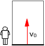
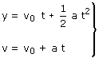
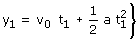
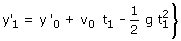
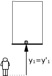
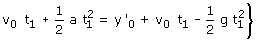
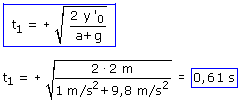

Este problema trata del choque de un grave (La bombilla) con una superficie que sube con aceleración (El suelo del ascensor). El problema empieza cuando se desprende la bombilla, en ese momento el ascensor ya ha adquirido una cierta velocidad como consecuencia de la aceleración
Ecuaciones de los movimientos:
Suelo del ascensor |
Bombilla: |
|
 |
 |
Parámetros: v0 a = 1 m/s2 |
|
|
Parámetros: y'0 = 2 m v0 g = 9.8 m/s2 |


v0, velocidad inicial de la bombilla y del suelo, es la velocidad que tiene el ascensor en el momento en que se desprende la bombilla del techo, esta velocidad no se conoce pero no importa como veremos enseguida
En el instante t1 la posiciones de suelo y bombilla serán:
 |
 |
Si se ha producido el encuentro las posiciones serán iguales: y1 = y'1
|  |
 |
